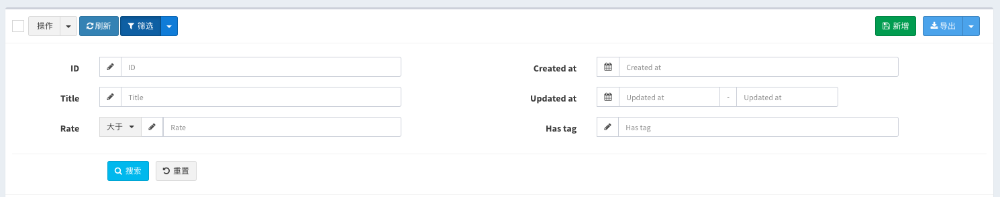

v1.6.0 (2018-09-09)
在这个版本中，有下面的修改和变更
Grid过滤器支持多列布局
如果过滤器太多，会把页面拉的很长，将会很影响页面的观感，这个版本将支持过滤器的多列布局, 比如6个过滤器分两列显示
$filter->column(1/2, function ($filter) {
$filter->like('title');
$filter->between('rate');
});
$filter->column(1/2, function ($filter) {
$filter->equal('created_at')->datetime();
$filter->between('updated_at')->datetime();
$filter->equal('released')->radio([
1 => 'YES',
0 => 'NO',
]);
});默认会有一个主键字段的过滤器放在第一列，所有左右各三个过滤器一共6个过滤器
column方法的第一个参数设置列宽度，可以设置为比例1/2或0.5，或者bootstrap的栅格列宽度比如6，如果三列的话可以设置为1/3或者4
效果参考DEMO

Grid过滤器支持过滤器组
有时候对同一个字段要设置多中筛选方式，可以通过下面的方式实现
$filter->group('rate', function ($group) {
$group->gt('大于');
$group->lt('小于');
$group->nlt('不小于');
$group->ngt('不大于');
$group->equal('等于');
});有下面的几个方法可以调用
// 等于
$group->equal();
// 不等于
$group->notEqual();
// 大于
$group->gt();
// 小于
$group->lt();
// 大于等于
$group->nlt();
// 小于等于
$group->ngt();
// 匹配
$group->match();
// 复杂条件
$group->where();
// like查询
$group->like();
// like查询
$group->contains();
// ilike查询
$group->ilike();
// 以输入的内容开头
$group->startWith();
// 以输入的内容结尾
$group->endWith();效果参考DEMO

Sweatalert更新为Sweatalert2
sweatalert2优化了UI，提供了更友好的API, v1.6.0从sweatalert替换为了sweatalert2
目前仅在删除数据的时候使用到了sweatalert，如果你在项目的其它地方有使用到sweatalert, 更新版本之后，参考sweetalert2迁移文档修改你的代码
扩展开发
在这个版本最大的变更是增强了laravel-admin的扩展功能，详情参考扩展开发
更新提示
运行
composer require encore/laravel-admin v1.6.0更新版本
如果要从v1.5版本更新到v1.6, 参考下面的提示
前端资源更新
因为前端资源有更新(Sweatalert更新为Sweatalert2), 所以要运行下面的命令来重新发布资源。
php artisan vendor:publish --tag=laravel-admin-assets配置调整
调整了部分配置，更新之后对比一下config/admin.php和admin.php的配置项，按照后者调整你的配置项